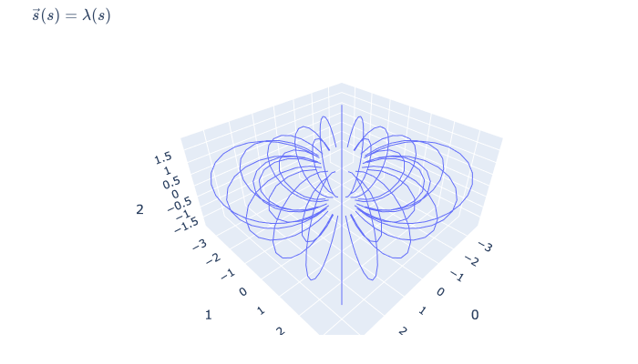
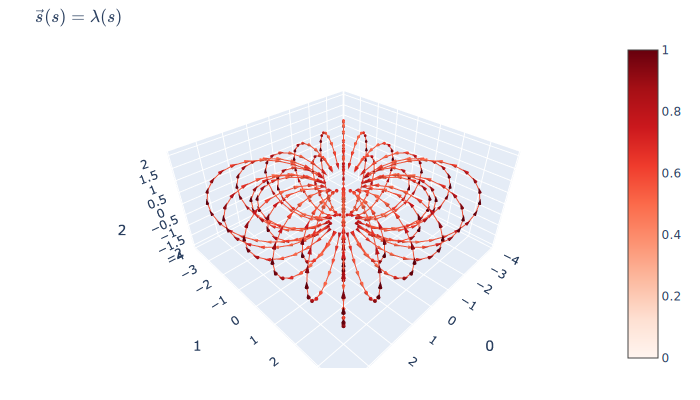

Field Integration Techniques¶
Many analysis techniques for vector fields require solving an initial value problem for an arbitrary set of seed points and evaluating such solutions at a chosen resolution. Kamodo makes it easy to generate fieldline solutions by providing a function decorator that wraps scipy's powerful solve_ivp function. Each family of solutions is represented by a single function of a complex parameter. We illustrate the flexibility of this approach in the example below.
# initialize
from plotly.offline import iplot, plot, init_notebook_mode
# init_notebook_mode(connected = True)
from kamodo import Kamodo, event, pointlike, kamodofy, solve
import numpy as np
import pandas as pd
Dipole field model¶
We use the following dipole field model that can accept (m,) and (1,m), and (n,m) arrays.
def Bdip(rvec):
"""Need math to work in a variety of arg shapes"""
muvec = Bdip.muvec
r = np.linalg.norm(rvec, axis = 1)
r[r==0] = np.nan
try:
rhat = rvec/r
except:
rhat = (rvec.T/r).T
try:
result = 3*np.dot(rhat, muvec.T)
except:
result = 3*np.dot(rhat.T, muvec.T).T
result = (rhat.T*result).T
try:
result = result - muvec
except:
result = (result - muvec.T).T
try:
result = result/r**3
except:
result = (result.T/r**3).T
return result
# set dipole moment
Bdip.muvec = np.array([0, 0, -1])
# pointlike enforces dimensionality
Bdip = pointlike(Bdip, '(n,m)->(n,m)', [np.float], squeeze = 0)
kamodo = Kamodo()
kamodo['Bvec'] = Bdip # register the dipole field
kamodo
Normalization¶
Instead of solving the initial value problem on the original field, we will be solving on the normalized field. This will mean that the integral path is the same as the arclength, allowing us to control the visual fidelity of the resulting field.
Create a normalization function to be applied to our field
@kamodofy(equation = "$$\\hat{n}(\\vec{y}) = \\vec{y}/\\sqrt{\\vec{y} \\cdot \\vec{y}} $$")
@pointlike(signature = '(m,n)->(m,n)', squeeze = 0)
def normalized(yvec):
r = np.linalg.norm(yvec, axis = 1)
r[r==0] = np.nan
try:
return yvec/r
except:
return (yvec.T/r).T
kamodo['nhat'] = normalized
Create a normalized field
kamodo['bhat'] = "nhat(Bvec)"
kamodo
Solving the initial value problem¶
Generate a set of seed points for integration
x0 = np.linspace(-np.pi,np.pi,6)
y0 = np.linspace(-np.pi,np.pi,6)
z0 = 1
seeds = np.array(np.column_stack([c.ravel() for c in np.meshgrid(x0,y0,z0)]))
Create a stopping boundary for field line integrator
@event
def boundary(s, rvec):
r = np.linalg.norm(rvec)
if np.isnan(r):
result = 0
else:
result = r - 1
return result
Solve the initial value problem for the normalized field
kamodo['svec'] = solve(kamodo.bhat, # the field to be solved
seeds, # the initial positions
's', # the name of the integration parameter
(0,30), # the span to integrate over
npoints = 60, # the number of points to evaluate the solution
events = boundary, # stop at the boundary
)
kamodo
The solver returns a family of solutions, represented as a single function of a complex array, where is a complex array.
Evaluating the Solutions¶
On evaluation, returns a pandas dataframe.
kamodo.svec().head()
When using the default argument above, the solution evaluates at a resolution of npoints/span, stopping at the boundary.
Complex parameterization¶
Kamodo represents the family of solutions to the initial value problem as a single function of a complex array.
The floor of the real part of the input parameter corresponds to the original seed array:
kamodo.svec([0,1,2]).values
compare with original seeds:
seeds[[0,1,2]]
The imaginary part denotes the integral along the corresponding solution. Here, we can choose evaluation points that were not in the original solution. Parameters outside the original span will be extrapolated.
kamodo.svec([-6j, -5j, 0, 5j, 6j, 4 + 4j, 4 -5.777j])
Plotting Fieldlines¶
We can quickly generate plots for all fieldlines at the default resolution by calling plot with the name of the fieldlines solution.
import plotly.io as pio
fig = kamodo.plot('svec')
pio.write_image(fig, './images/fieldlines.svg')

To show the direction of the field at each point, we can evaluate
fig = kamodo.plot('svec',
bhat = dict(rvec = kamodo.svec()))
pio.write_image(fig,'./images/fieldlines_vectors.svg')

Integration totals¶
To compute the total integral for each fieldline individually, we need a function to subtract the integration results at the endpoints.
def integral(fieldline):
endpoints = fieldline.reset_index().integral.iloc[[0,-1]]
return endpoints.values[-1] - endpoints.values[0]
totals = []
for seed, fieldline in kamodo.svec().groupby(level = 'seed'):
totals.append(integral(fieldline))
totals[:5]
Alternatively, we can use pandas' aggregation methods to apply our function on each fieldline.
kamodo.svec().groupby(level='seed').aggregate(integral)